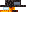

Changelog
Version 0.0.31
- Changes & Bug Fixes:
* Changed the Velvet Fern texture to be not as bright of pink. * Adjusted the size of Glint Berry
Version 0.0.30
- IMPORTANT: NEW DEPENDENCY! Starting with 0.0.24, Vesper Wilds requires GeckoLib 5.4.2 or higher to run properly.
- New Features & Content:

* New Mechanic: Twilight Resonance! In light levels below 7, mining speed is increased by 20% and attack damage is increased by 2. * New Event: Velvet Eclipse! A dangerous atmospheric event where Gloom Stalkers spawn outside the Vesper Grove, crop growth halts, and Twilight Resonance is enhanced. * New Items: Added the Velvet Cloak and Velvet Fuzz. * Spawn Eggs: Added for Velvet Moth and Gloom Stalker
- Changes & Tweaks:
* Creative Menu: Reorganized for better navigation.
- Bug Fixes:

* Fixed recipes and blast furnace compatibility for Raw Vesperite
Version 0.0.24-1
- Changes:
Version 0.0.24
- New Features & Content:
* Added Vesperite Ores, Shards, Ingots, and a full Vesperite Tool/Armor set. * Added Velvet Fuzz and Velvet Fern blocks.
Version 0.0.19 & 0.0.20
- Added:
* Vesperite Tools: Full toolset (Pickaxe, Axe, Shovel, Sword, Hoe), slightly faster than Iron. * New Vegetation: Ember Shelf Fungus 
- Changed:
* Removed Vanilla Stones (Granite, Diorite, Andesite) from Vesper Grove for "cleaner underground development."
Version 0.0.17
- Added: Custom falling leaf texture for Velvet Leaves(previously used cherry leaves).

Version 0.0.15
- Added: Textures for Velvet Door and Velvet Trapdoor.
- Changes: Backend updates for recipe, tag, and loot table handling.
Version 0.0.10
- Initial Release:
* Vesper Grove biome and Vesperite Ore. * Custom Trees.